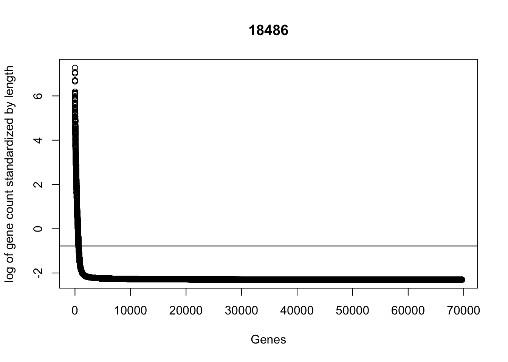
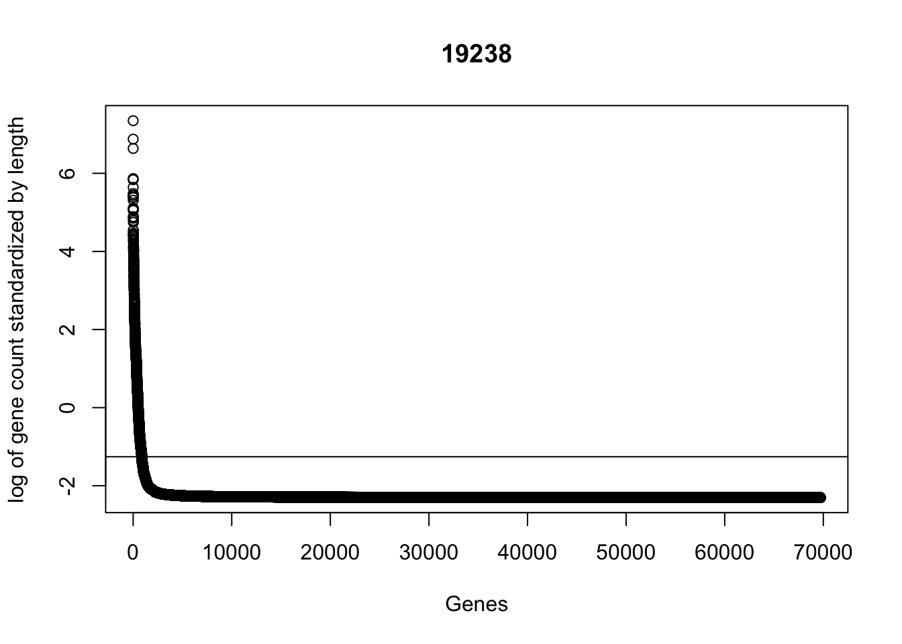

Last updated: 2017-11-22
Code version: 8465e92
The goal of this analysis is too look at read coverage in genes/exons/and in genes + promoter regions for my Net-seq data and the Mayer data. This will help me understand if the problem with this data is coverage.
I have downloaded 3 bed files from the UCSC table browser:
Ref seq genes
Ref seq genes + 250 upstream
Ref seq exons
I will use the bedtools coverage function. Documentation is below:
http://bedtools.readthedocs.io/en/latest/content/tools/coverage.html
bedtools coverage -a <FILE> \
-b <FILE1, FILE2, ..., FILEN>Write a bash script for genes overlap: genome_overlap.sh
#!/bin/bash
#SBATCH --job-name=bedtools_coverage
#SBATCH --time=8:00:00
#SBATCH --partition=broadwl
#SBATCH --mem=8G
#SBATCH --tasks-per-node=4
#$1 reference to use
bedtools coverage -a $1 -b /project2/gilad/briana/Net-seq/Net-seq1/data/sort/YG-SP-NET1-18486-dep-2017-10-13_S4_R1_001-sort.bam /project2/gilad/briana/Net-seq/Net-seq1/data/sort/YG-SP-NET1-18508-dep-2017-10-13_S2_R1_001-sort.bam /project2/gilad/briana/Net-seq/Net-seq1/data/sort/YG-SP-NET1-18508-nondep-2017-10-13_S3_R1_001-sort.bam /project2/gilad/briana/Net-seq/Net-seq1/data/sort/YG-SP-NET1-Unk1_S6_R1_001-sort.bam /project2/gilad/briana/Net-seq/data/sort/SRR1575922-sort.bam
#> to a txt file
bedtools coverage -a ref_seq_gene_hg19_ -b /project2/gilad/briana/Net-seq/Net-seq1/data/net1_18486_dep_dedup_chr.bed -hist > gene_coverage_18486_dedup_hist.txt
Try with only 1 file first.
Try with /project2/gilad/briana/Net-seq/Net-seq1/data/net1_18486_dep_dedup_chr.bed
This works but it is for the deduplicated file. I am going to do the sorted files first. I need to convert the sorted bam files to bed files. All of the sorted bed files with the chr label are in data/bed
Should probably do this for the deduplicated files as well.
bedtools bamtobed [OPTIONS] -i <BAM>
awk '$0="chr"$0' file > new_file Only want first 6 columns of the ref file
cat ref_seq_gene_hg19 | cut -f 1-6 > ref_seq_gene_hg19_small_cut
Still to big. Run on one file.
bedtools coverage -a ref_seq_gene_hg19_small_cut -b /project2/gilad/briana/Net-seq/Net-seq1/data/bed/net1_18486_dep_chr.bed > gene_coverage_18486_hist.txtRun this to make:
gene_coverage_18508_dep_hist.txt
gene_coverage_18508_dep_hist.txt
gene_coverage_18508_nondep_hist.txt
gene_coverage_19238_dep_hist.txt
gene_coverage_mayer_SRR1575922_hist.txt
Sort the bed files then rerun the coverage with the counts option to get one read count per gene. I have the script to sort the script files in each data/bed folder. ls
bedtools coverage -counts -a ref_seq_gene_hg19_small_cut -b /project2/gilad/briana/Net-seq/Net-seq1/data/bed_sort/net1_18486_dep_chr_sort.bed > gene_cov_count/gene_coverage_18486_count.txt
bedtools coverage -counts -a ref_seq_gene_hg19_small_cut -b /project2/gilad/briana/Net-seq/Net-seq1/data/bed_sort/net1_18508_dep_chr_sort.bed > gene_cov_count/gene_coverage_18508_dep_count.txt
bedtools coverage -counts -a ref_seq_gene_hg19_small_cut -b /project2/gilad/briana/Net-seq/Net-seq1/data/bed_sort/net1_18508_nondep_chr_sort.bed > gene_cov_count/gene_coverage_18508_nondep_count.txt
bedtools coverage -counts -a ref_seq_gene_hg19_small_cut -b /project2/gilad/briana/Net-seq/Net-seq1/data/bed_sort/net1_19238_dep_chr_sort.bed > gene_cov_count/gene_coverage_19238_dep_count.txt
bedtools coverage -counts -a ref_seq_gene_hg19_small_cut -b /project2/gilad/briana/Net-seq/data/bed_sort/mayer_SRR1575922_chr_sort.bed > gene_cov_count/gene_coverage_mayer_SRR1575922_count.txt
Install packages:
library(vioplot)Loading required package: smPackage 'sm', version 2.2-5.4: type help(sm) for summary informationlibrary(dplyr)
Attaching package: 'dplyr'The following objects are masked from 'package:stats':
filter, lagThe following objects are masked from 'package:base':
intersect, setdiff, setequal, unionlibrary(ggplot2)gene_coverage_18486_count= read.csv("../data/gene_cov_count/gene_coverage_18486_count.txt", header=FALSE, sep="\t")
gene_coverage_18508_dep_count= read.csv("../data/gene_cov_count/gene_coverage_18508_dep_count.txt", header=FALSE, sep="\t")
gene_coverage_18508_nondep_count= read.csv("../data/gene_cov_count/gene_coverage_18508_nondep_count.txt", header=FALSE, sep="\t")
gene_coverage_19238_dep_count= read.csv("../data/gene_cov_count/gene_coverage_19238_dep_count.txt", header=FALSE, sep="\t")
gene_coverage_mayer_dep_count = read.csv("../data/gene_cov_count/gene_coverage_mayer_SRR1575922_count.txt", header=FALSE, sep="\t")colnames(gene_coverage_18486_count) = c("chr", "start", "end", "name", "score", "strand", "counts")
colnames(gene_coverage_18508_dep_count)= c("chr", "start", "end", "name", "score", "strand", "counts")
colnames(gene_coverage_18508_nondep_count)=c("chr", "start", "end", "name", "score", "strand", "counts")
colnames(gene_coverage_19238_dep_count)= c("chr", "start", "end", "name", "score", "strand", "counts")
colnames(gene_coverage_mayer_dep_count)= c("chr", "start", "end", "name", "score", "strand", "counts")Next I will merge theses files to create 1 file with all of the data.
gene_coverage_all= cbind(gene_coverage_18486_count, gene_coverage_18508_dep_count$counts, gene_coverage_18508_nondep_count$counts, gene_coverage_19238_dep_count$counts, gene_coverage_mayer_dep_count$counts)
colnames(gene_coverage_all)= c("chr", "start", "end", "name", "score", "strand", "c_18486", "c_18508_dep", "c_18508_nondep", "c_19238_dep", "c_mayer")Add a column for length of A:
#add length column
gene_coverage_all= mutate(gene_coverage_all, length=end-start)
#add columns for standard count
gene_coverage_all= mutate(gene_coverage_all,st_18486=c_18486/length)
gene_coverage_all= mutate(gene_coverage_all,st_18508_dep= c_18508_dep /length)
gene_coverage_all= mutate(gene_coverage_all,st_18508_nondep=c_18508_nondep/length)
gene_coverage_all= mutate(gene_coverage_all,st_19238=c_19238_dep/length)
gene_coverage_all= mutate(gene_coverage_all,st_mayer=c_mayer/length)plot(sort(-log(gene_coverage_all$st_18486), decreasing=TRUE), ylab="-log of gene count standardized by length", xlab="Genes", main="18486")
abline(a=-log(mean(gene_coverage_all$st_18486)),b=0)
plot(sort(-log(gene_coverage_all$st_18508_dep), decreasing=TRUE), ylab="-log of gene count standardized by length", xlab="Genes", main="18505 dep")
abline(a=-log(mean(gene_coverage_all$st_18508_dep)),b=0)plot(sort(-log(gene_coverage_all$st_18508_nondep), decreasing=TRUE), ylab="-log of gene count standardized by length", xlab="Genes", main="18505 nondep")
abline(a=-log(mean(gene_coverage_all$st_18508_nondep)),b=0)plot(sort(-log(gene_coverage_all$st_19238), decreasing=TRUE), ylab="-log of gene count standardized by length", xlab="Genes", main="19238")
abline(a=-log(mean(gene_coverage_all$st_19238)),b=0)
plot(sort(-log(gene_coverage_all$st_mayer), decreasing=TRUE), ylab="-log of gene count standardized by length", xlab="Genes", main="Mayer")
abline(a=-log(mean(gene_coverage_all$st_mayer)),b=0)#boxplot- violin plot is better but you get infinities
boxplot(-log(gene_coverage_all$st_18486), -log(gene_coverage_all$st_18508_dep), -log(gene_coverage_all$st_18508_nondep), -log(gene_coverage_all$st_19238), -log(gene_coverage_all$st_mayer), names=c("18486", "18508_dep", "18508_nondep", "19238", "Mayer"), ylab="-log of standard expression")Warning in bplt(at[i], wid = width[i], stats = z$stats[, i], out = z$out[z
$group == : Outlier (Inf) in boxplot 1 is not drawnWarning in bplt(at[i], wid = width[i], stats = z$stats[, i], out = z$out[z
$group == : Outlier (Inf) in boxplot 2 is not drawnWarning in bplt(at[i], wid = width[i], stats = z$stats[, i], out = z$out[z
$group == : Outlier (Inf) in boxplot 3 is not drawnWarning in bplt(at[i], wid = width[i], stats = z$stats[, i], out = z$out[z
$group == : Outlier (Inf) in boxplot 4 is not drawnWarning in bplt(at[i], wid = width[i], stats = z$stats[, i], out = z$out[z
$group == : Outlier (Inf) in boxplot 5 is not drawnTo use ggplot I need to reformat the dataframe to gene by sample.
gene_names= gene_coverage_all$name
standard_counts= gene_coverage_all[, 13:17]
#row.names(standard_counts)=gene_namesprom_coverage_18486_count= read.csv("../data/prom_coverage/prom_coverage_18486_count.txt", header=FALSE, sep="\t")
prom_coverage_18508_dep_count= read.csv("../data/prom_coverage/prom_coverage_18508_dep_count.txt", header=FALSE, sep="\t")
prom_coverage_18508_nondep_count= read.csv("../data/prom_coverage/prom_coverage_18508_nondep_count.txt", header=FALSE, sep="\t")
prom_coverage_19238_dep_count= read.csv("../data/prom_coverage/prom_coverage_19238_dep_count.txt", header=FALSE, sep="\t")
prom_coverage_mayer_dep_count = read.csv("../data/prom_coverage/promoter_coverage_mayer_SRR1575922_count.txt", header=FALSE, sep="\t")colnames(prom_coverage_mayer_dep_count)= c("chr", "start", "end", "name", "score", "strand", "counts")
colnames(prom_coverage_19238_dep_count)= c("chr", "start", "end", "name", "score", "strand", "counts")
colnames(prom_coverage_18508_nondep_count)= c("chr", "start", "end", "name", "score", "strand", "counts")
colnames(prom_coverage_18508_dep_count) = c("chr", "start", "end", "name", "score", "strand", "counts")
colnames(prom_coverage_18486_count)= c("chr", "start", "end", "name", "score", "strand", "counts")exon_coverage_18486_count= read.csv("../data/exon_cov/exon_coverage_18486_count.txt", header=FALSE, sep="\t")
exon_coverage_18508_dep_count= read.csv("../data/exon_cov/exon_coverage_18508_dep_count.txt", header=FALSE, sep="\t")
exon_coverage_18508_nondep_count= read.csv("../data/exon_cov/exon_coverage_18508_nondep_count.txt", header=FALSE, sep="\t")
exon_coverage_19238_dep_count= read.csv("../data/exon_cov/exon_coverage_19238_dep_count.txt", header=FALSE, sep="\t")
exon_coverage_mayer_dep_count = read.csv("../data/exon_cov/exon_coverage_mayer_SRR1575922_count.txt", header=FALSE, sep="\t")colnames(exon_coverage_mayer_dep_count)=c("chr", "start", "end", "name", "score", "strand", "counts")
colnames(exon_coverage_19238_dep_count)= c("chr", "start", "end", "name", "score", "strand", "counts")
colnames(exon_coverage_18508_nondep_count)= c("chr", "start", "end", "name", "score", "strand", "counts")
colnames(exon_coverage_18508_dep_count)= c("chr", "start", "end", "name", "score", "strand", "counts")
colnames(exon_coverage_18486_count)= c("chr", "start", "end", "name", "score", "strand", "counts") These are the historgram files I made.
#gene_coverage_18486_dedup= read.csv("../data/gene_coverage_18486_dedup_hist.txt", header=FALSE, sep="\t")
#gene_coverage_18486= read.csv("../data/gene_coverage_18486_hist.txt", head=FALSE, sep="\t")
#gene_coverage_18508_dep= read.csv("../data/gene_coverage_18508_dep_hist.txt", header=FALSE, sep="\t")
#gene_coverage_18508_nondep= read.csv("../data/gene_coverage_18508_nondep_hist.txt", head=FALSE, sep="\t")
#gene_coverage_19238_dep = read.csv("../data/gene_coverage_19238_dep_hist.txt", head=FALSE, sep="\t")
#gene_coverage_mayer_dep = read.csv("../data/gene_coverage_mayer_SRR1575922_hist.txt", head=FALSE, sep="\t")Add column names:
#colnames(gene_coverage_18486_dedup)= c("chr", "start", "end", "name", "score", "strand", "overlap", "bases_non_zero", "lengthA", "frac_A_non_zero_hist")
#colnames(gene_coverage_18486)= c("chr", "start", "end", "name", "score", "strand", "overlap", "bases_non_zero", "lengthA", "frac_A_non_zero_hist")
#colnames(gene_coverage_18508_dep)= c("chr", "start", "end", "name", "score", "strand", "overlap", "bases_non_zero", "lengthA", "frac_A_non_zero_hist")
#colnames(gene_coverage_18508_nondep)= c("chr", "start", "end", "name", "score", "strand", "overlap", "bases_non_zero", "lengthA", "frac_A_non_zero_hist")
#colnames(gene_coverage_19238_dep)= c("chr", "start", "end", "name", "score", "strand", "overlap", "bases_non_zero", "lengthA", "frac_A_non_zero_hist")
#colnames(gene_coverage_mayer_dep)= c("chr", "start", "end", "name", "score", "strand", "overlap", "bases_non_zero", "lengthA", "frac_A_non_zero_hist")Omit NA columns:
# gene_coverage_18486= na.omit(gene_coverage_18486)
# gene_coverage_18486_dedup= na.omit(gene_coverage_18486_dedup)
# gene_coverage_18508_dep= na.omit(gene_coverage_18508_hist_dep)
# gene_coverage_18508_nondep= na.omit(gene_coverage_18508_nondep)
# gene_coverage_19238_dep= na.omit(gene_coverage_19238_dep)
# gene_coverage_mayer_dep= na.omit(gene_coverage_mayer_dep)sessionInfo()R version 3.4.2 (2017-09-28)
Platform: x86_64-apple-darwin15.6.0 (64-bit)
Running under: macOS Sierra 10.12.6
Matrix products: default
BLAS: /Library/Frameworks/R.framework/Versions/3.4/Resources/lib/libRblas.0.dylib
LAPACK: /Library/Frameworks/R.framework/Versions/3.4/Resources/lib/libRlapack.dylib
locale:
[1] en_US.UTF-8/en_US.UTF-8/en_US.UTF-8/C/en_US.UTF-8/en_US.UTF-8
attached base packages:
[1] stats graphics grDevices utils datasets methods base
other attached packages:
[1] bindrcpp_0.2 ggplot2_2.2.1 dplyr_0.7.4 vioplot_0.2 sm_2.2-5.4
loaded via a namespace (and not attached):
[1] Rcpp_0.12.13 knitr_1.17 bindr_0.1 magrittr_1.5
[5] munsell_0.4.3 colorspace_1.3-2 R6_2.2.2 rlang_0.1.4
[9] plyr_1.8.4 stringr_1.2.0 tools_3.4.2 grid_3.4.2
[13] gtable_0.2.0 git2r_0.19.0 htmltools_0.3.6 lazyeval_0.2.1
[17] yaml_2.1.14 rprojroot_1.2 digest_0.6.12 assertthat_0.2.0
[21] tibble_1.3.4 glue_1.2.0 evaluate_0.10.1 rmarkdown_1.6
[25] stringi_1.1.5 compiler_3.4.2 scales_0.5.0 backports_1.1.1
[29] pkgconfig_2.0.1 This R Markdown site was created with workflowr